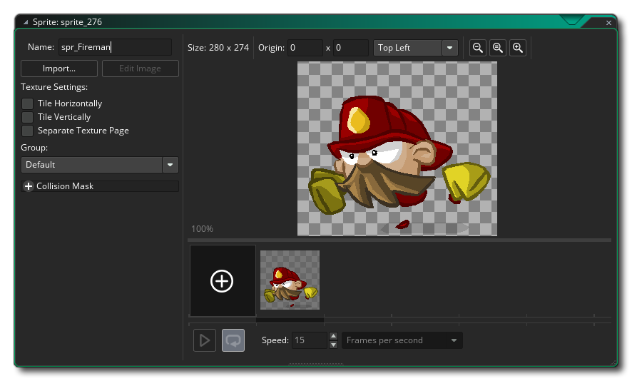

GameMaker Studio 2 es compatible con sprites que no son de mapa de bits en forma de archivos vectoriales SWF o archivos Spine Skeletal Animation. Ambos formatos tienen sus pros y sus contras, y las dos secciones a continuación explican cómo importarlos en el Editor de Sprite, así como un poco de información sobre cómo se procesan.
GameMaker Studio 2 tiene soporte limitado para sprites vectoriales. En general, todos los sprites en GameMaker usan mapas de bits que, si bien son flexibles en términos de contenido, imponen limitaciones tanto en el tamaño como en el número de cuadros posibles en un sprite antes de que el uso de la memoria se vuelva prohibitivo. Los sprites vectoriales evitan estas limitaciones almacenando y dibujando sus contenidos de manera diferente, en lugar de una cuadrícula de píxeles, que pueden volverse en bloques o difusos cuando se escalan, se dibujan como triángulos que se pueden escalar sin perder la definición, como se ilustra en la imagen de abajo.:
Para ayudarlo a visualizar cómo se hace esto, la imagen de abajo es del mismo vector. Fireman sprite solo ahora podemos ver los polígonos que se usan para hacer la imagen dentro de GameMaker Studio 2:
Sin embargo, nada es gratis cuando se trata de juegos de programación, y la desventaja aquí con los sprites vectoriales es que son más caros de dibujar que los sprites de mapa de bits y esta diferencia de velocidad aumenta a medida que aumenta la complejidad de la animación que se importa. Además, su uso de memoria se ve afectado por su complejidad visual, a diferencia de los sprites de mapa de bits. Teniendo esto en cuenta, hacen posible agregar grandes gráficos animados de formas que serían imposibles de usar sprites de mapas de bits tradicionales.
En el lado opuesto de la ecuación de rendimiento, dado que los sprites vectoriales solo dibujan los píxeles absolutamente necesarios (a diferencia de los sprites de mapa de bits que también "dibujan" el espacio vacío alrededor de la imagen) pueden ser más baratos desde la perspectiva de la GPU. Además, en general, los sprites vectoriales son mucho más pequeños que sus equivalentes de mapa de bits; para el ejemplo de bombero, los tamaños de los distintos tipos de sprites son los siguientes:
Bitmap at 70x68 = 4x70x68 bytes x 12 frames = 223k
Vector = 54kSi cuadruplicas la resolución del sprite:
Bitmap at 280x272 = 4x280x272 bytes x 12 frames = 3570k
Vector = 54kEntonces, como se puede ver, se puede ahorrar una gran cantidad de memoria utilizando sprites vectoriales, y todavía tenemos un gran potencial para futuros ahorros de espacio.
Actualmente, GameMaker Studio 2 solo puede importar imágenes vectoriales desde archivos en formato SWF, y la forma de importarlas al programa es casi idéntica a la de agregar una imagen de mapa de bits normal. Para agregar un sprite vectorial, cree un nuevo sprite, que abrirá el diálogo estándar Cargar Sprite, pero asegúrese de haber seleccionado *.swf en el filtro de archivos en la parte inferior.
Al presionar el botón "cargar" se agregará la imagen vectorial o la animación al árbol de recursos, y se mostrará una barra de progreso mientras se procesa el archivo. Tenga en cuenta que, dependiendo de la complejidad del archivo, esto puede llevar un tiempo (hasta un minuto para animaciones más complejas). Cuando el procesamiento haya finalizado, volverá al diálogo de propiedades del sprite, que ahora se verá así: 
Como puede ver, se ve como el diálogo normal de sprites, con el primer cuadro del archivo vectorial que se muestra en la ventana de vista previa de la imagen a la derecha. Sin embargo, hay un par de cambios en un diálogo de sprite normal. En primer lugar, el botón Editar Sprite se ha ido ya que no hay mapas de bits para editar en este tipo de sprite, y en segundo lugar, se ha agregado un nuevo botón Mostrar Sprite. Este botón abrirá el archivo vectorial en cualquier aplicación asociada con él. Normalmente, esto es lo predeterminado para su navegador web, pero si no tiene un programa asociado con el archivo, entonces no ocurrirá nada y, como el botón está desactivado (puede resolverlo abriendo el Explorador de Windows y haciendo clic con el botón derecho en un archivo vectorial). luego use " abrir con " para elegir el programa a asociar con estos archivos). También puede asociar un visor para estos sprites en la sección Preferencias Generales - Rutas dentro de GameMaker Studio 2 y se abrirá el botón Mostrar Sprite que en lugar del visor predeterminado.
NOTA: El aspecto de la imagen en el editor de vista previa elegido no será el mismo que se verá en su juego, ni la apariencia de la ventana de vista previa del editor de sprites. La imagen vectorial se importará en el tamaño en que se creó, que no es necesariamente el tamaño en el que se muestra la vista previa (los navegadores normalmente escalarán la imagen para que quepa, por ejemplo).También puede establecer la calidad del vector sprite cuando se dibuja. Esto simplemente reducirá o aumentará el número de triángulos utilizados para generar el sprite, siendo el valor de calidad predeterminado de 50 normalmente suficiente para la mayoría de los juegos, sin embargo, debe experimentar con este valor si está usando una escala extrema o tiene problemas de rendimiento. Desde este punto, las otras partes del editor deberían funcionar de la misma manera que lo hacen para sprites de mapa de bits.
Hay una serie de cosas que debe tener en cuenta al importar sprites vectoriales, siendo el más importante el hecho de que algunas de las funciones de dibujo de sprites y de gestión de sprites no son compatibles por razones técnicas, en particular las funciones de dibujo que dibujan solo una parte de un sprite., o que "desvía" la posición de alguna manera (vea las funciones individuales de draw_sprite _ * () para detalles exactos de las cuales). Sin embargo, las funciones básicas de dibujo de sprite son totalmente compatibles, al igual que las variables de sprite incorporadas. También puede establecer diferentes valores de suavizado (AA) para los sprites SWF que se dibujan usando las funciones que se encuentran aquí: Dibujar Sprites y Azulejos.
También debe tener en cuenta lo siguiente:
- Al importar un archivo *.SWF, Actionscript no es compatible, por lo que si su SWF confía en que funcione correctamente, probablemente no saldrá bien. De manera similar, cualquier clip de película incrustado que tenga su propia línea de tiempo solo tendrá su primer cuadro mostrado a lo largo de la animación; toda la animación debe estar en la línea de tiempo principal.
- Si su archivo vectorial tiene detalles particularmente finos, puede encontrar ocasionalmente que aparezcan agujeros o triángulos extraños en los sprites resultantes. Esto se debe a que, a pequeña escala, la geometría a veces puede colapsar para crear formas que simplemente no se triangulan bien. En este caso, tiene dos opciones: puede escalar el contenido del archivo vectorial, lo que le dará al importador más espacio para jugar, o puede intentar reducir el nivel de detalle en el objeto que se está rompiendo.
- GameMaker Studio 2 usa el tamaño de escenario del SWF como los límites del sprite resultante. Sin embargo, si tiene algo en el escenario fuera de estos límites , aún está dibujado. Esto significa que debe tratar de evitar poner algo fuera de los límites de su etapa si no desea que se muestre, o usar una capa de máscara para limitar el dibujo a esta área.
- El tamaño del escenario también afecta el tamaño de las máscaras de colisión que se generan, por lo tanto, si tiene un gran tamaño del escenario y muchos fotogramas en la animación, es posible que se consuma mucha memoria. Por lo tanto, solo use máscaras de colisión precisas si realmente las necesita.
- Como un archivo SWF se crea a partir de varias capas, algunas de las cuales se superponen, alfa no funciona como lo hace con los sprites de mapa de bits: las áreas superpuestas no se verán tan transparentes como las otras partes del sprite, ya que los píxeles que se encuentran allí dibujado en varias veces.
- Los rellenos de mapa de bits son compatibles, sin embargo, si utiliza rellenos de mapa de bits en mosaico como parte de su archivo SWF, debe asegurarse de que el mapa de bits tenga una potencia de dos, de lo contrario no se acumulará correctamente. La representación de texto también es compatible, pero necesita incrustar la fuente en su archivo SWF para que aparezca en el sprite resultante. Además, actualmente solo se admite el texto de una sola línea alineado a la izquierda.
Un sprite creado con animación esquelética, es aquel en el que se ha creado y animado un "esqueleto" de base mediante fotogramas clave para mover las partes componentes del esqueleto a lo largo del tiempo. Este esqueleto se despelleja de un atlas de textura y la animación resultante se exporta en uno de los muchos tipos de archivos. Gamemaker: Studio le permite importar este tipo de sprite siempre que se haya exportado como un *.json archivo de formato y tiene el archivo de atlas de textura correctamente asociado ( *.atlas ) y el archivo de imagen (como *.png ) en el mismo directorio.
IMPORTANTE: GameMaker Studio 2 solo admite un atlas de textura única por sprite.NOTA: esta función actualmente solo admite archivos creados con el programa Spine.Actualmente, GameMaker Studio 2 solo puede importar imágenes vectoriales desde archivos en formato JSON creados por el programa Spine, sin embargo, la forma de importarlas en el programa es casi idéntica a la de agregar una imagen de mapa de bits normal. Para agregar una animación esquelética, debe crear un nuevo sprite, que abrirá el diálogo estándar Cargar Sprite, pero asegúrese de que ha seleccionado *.json desde el filtro de archivos en la parte inferior.
Al presionar el botón "cargar" se agregará la animación esquelética al árbol de recursos como un sprite, con una barra de progreso que se muestra a medida que se procesa el archivo. Tenga en cuenta que, dependiendo de la complejidad del archivo, esto puede tomar un momento o dos. Cuando el procesamiento haya finalizado, volverá al diálogo de propiedades del sprite, que ahora se verá así:
Una vez que haya importado la animación, puede establecer las propiedades de colisión, pero tenga en cuenta que aquí está limitado a simplemente usar colisiones precisas o colisiones de cuadros delimitadores, y que los datos de colisión para una animación esquelética se toman explícitamente de los datos proporcionados. GameMaker Studio 2 no genera ninguna máscara de colisión si faltan datos del archivo importado, lo que significa que simplemente no obtendrá colisiones de trabajo si las máscaras no están configuradas correctamente en el programa utilizado para crear la imagen que se está importando.
NOTA: Debido a la complejidad de las animaciones esqueléticas, la imagen de vista previa que se muestra en el editor de sprites no pretende representar con precisión su animación, sino que le brinda una imagen simple que representa la animación para visualizar en el editor de sala.A diferencia de los sprites de mapa de bits, el sprite de animación esquelético importado no se puede modificar en el editor de ninguna manera, pero hay una serie de funciones disponibles dentro del lenguaje GameMaker (GML) que se pueden usar para cambiar skins, establecer propiedades y controlar otros aspectos de la animación.
Hay una serie de cosas que debe tener en cuenta al importar sprites de animación de esqueleto, siendo el más importante el hecho de que algunas de las funciones de dibujo de sprite y de gestión de sprite no son compatibles por razones técnicas, en particular las funciones de dibujo que dibujan solo parte de un sprite, o que "desvía" la posición de alguna manera (vea las funciones de draw_sprite _ * () individuales para detalles exactos de las cuales). Sin embargo, las funciones básicas de dibujo de sprite son totalmente compatibles, al igual que las variables de sprite incorporadas. Además de estas funciones y variables, también puede establecer y cambiar las propiedades de animación utilizando skeleton_* funciones, que se enumeran y explican en la sección de referencia sobre animaciones esqueléticas.